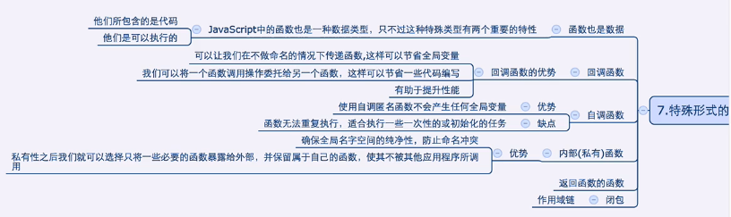
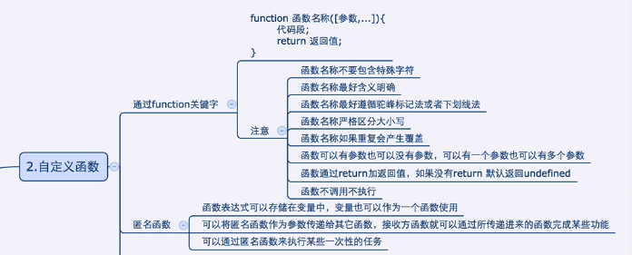

<!DOCTYPE html>
<html lang="en">
<head>
    <meta charset="UTF-8">
    <title>Title</title>
</head>
<script type="text/javascript" src="../../DebugUtils.js"></script>
<body>
<script>
  p('');
  sep();

  var funcObj = function calc(a, b) {
    return a + b;
  }
  p(typeof funcObj); // function
  p(funcObj(1, 2)); // 3
  var funcObj2 = funcObj;
  p(funcObj2(3, 4)) // 7

  // anonymous
  p('');
  sep();
  var anonymousFunc = function(x, y) {
    return x*y;
  }
  123;
  'king';
  p(anonymousFunc(2,2)) // 4

  sep();
  b('回调函数');
  function recallFunc(x, y) {
    return x() + y();
  }
  function recall1() {
    return 3;
  }
  function recall2() {
    return 4;
  }
  p(recallFunc(recall1, recall2)); // 7   注意函数名后面不能带()
  p(recallFunc(function(){return 1;}, function(){return 10;})); // 11

  function addOne(n) {
    return n + 1;
  }
  function testRecall(a, b, c, callback) {
    var i, arr = [];
    for (var j = 0; j < 3; j++) {
      arr[j] = callback(arguments[j] * 2);
    }
    return arr;
  }

  p(testRecall(5,6,7, addOne));

  sep();
  b('call, apply');
  function callApplyFunc(a, b) {
    return a * b;
  }
  p(callApplyFunc.call(callApplyFunc, 5, 10));
  var params = [3, 4];
  p(callApplyFunc.apply(callApplyFunc, params)); // 需要传数组

  sep();
  b('自调用函数');
  b('使用自调用函数不会产生任何全局变量，但无法重复执行，适合执行一些一次性的或初始化的任务');
  (
          function () {
            p('this is a self called function');
          }
  )();
  
  (
          function (a, b) {
            p(a + b);
          }
  )(3,5);


</script>
</body>
</html>